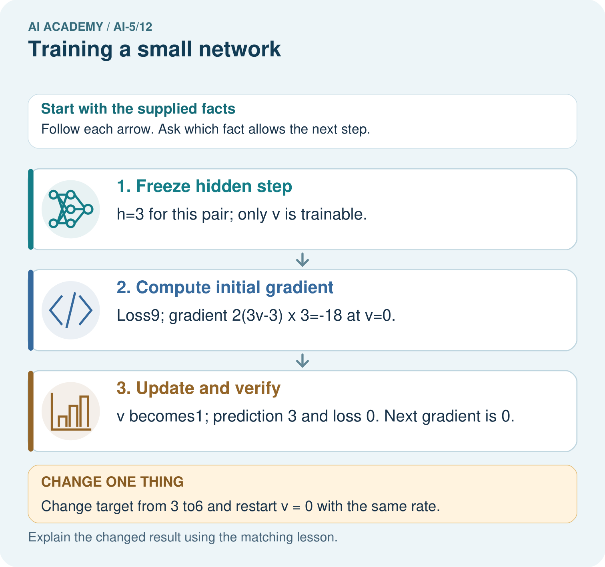

AI Academy · Level 5 · Grade 10 · Week 12 · Teacher guide
Training a small network
Learn to understand, design, build, test and explain AI systems responsibly.
Project: Image-pattern Network Investigation
Teacher guide · 1 of 7
Prepare the purpose, prerequisites and materials
Teach the learning cycle
Primary target: Trace repeated forward loss gradient and update steps
| Session | Sequence and minutes | Resources |
|---|---|---|
| Session 1 · Understand · 45 min | 0–7: recall and prerequisite; 7–15: inspect the concrete case and predict; 15–30: teacher models the worked trace; 30–40: learners explain a step using the text and visual; 40–45: check the core idea. | Sections 1–6; record the brief recall in the workbook. |
| Session 2 · Practise · 45 min | 0–5: retrieve the procedure; 5–15: W2 completion practice; 15–23: explain and check with a partner; 23–30: each learner answers the misconception check; 30–40: targeted reteaching or a harder variation; 40–45: prepare the investigation. | Sections 7–10; use the matching workbook W2 and misconception check. |
| Session 3 · Investigate and transfer · 45 min | 0–5: retrieve the decision rule; 5–20: investigate or trace; 20–30: start the independent case; 30–38: connect the project; 38–43: act on feedback; 43–45: plan the return check. | Sections 9 and 11–14. Give extra time to finish the full task set; use Section 15 when the week includes a coding lab. |
This is a starting allocation of 135 minutes, not a validated duration. Preserve all named topics. Schedule extra time for connected examples, the full investigation, independent cases and project building. Repeated copies of a case share one recorded attempt; they are not new evidence.
Retrieval answer guidance
Updating parameters
Without opening the old lesson, explain one key idea from Updating parameters. Give an example and a mistake that the idea helps you avoid.
Look for: Apply a learning rate to an ordered gradient
Reference example, not the only acceptable wording: Teacher explanation: New a = 2 - 0.2 times -3 = 2.6.
Slopes and local change
Without opening the old lesson, explain one key idea from Slopes and local change. Give an example and a mistake that the idea helps you avoid.
Look for: Calculate an average rate of change over a stated interval
Reference example, not the only acceptable wording: Teacher explanation: Average slope is (0 - 4) / 2 = -2. The local slope at 2 is zero. They describe different locations or intervals.
Forward passes by hand
Without opening the old lesson, explain one key idea from Forward passes by hand. Give an example and a mistake that the idea helps you avoid.
Look for: Record scores and activations in dependency order
Reference example, not the only acceptable wording: Teacher explanation: z = [-3, 3], h = [0, 3], y = -5.
Use two 45-minute sessions to connect earlier ideas into one reproducible training loop. Be explicit that only the output weight is trained; backpropagation through all hidden parameters is not implemented here. Keep the reserved pair outside training and do not oversell its evidential value.
Outcomes
Trace repeated forward loss gradient and update steps
Keep frozen parameters distinct from the trained parameter
Report training results with their evaluation limits
Preparation
Printed lesson and workbook; paper and pencil
Calculator and optional local Python 3 editor; no packages or AI accounts needed
Use the fictional examples supplied; prepare the fresh retry before class
Prerequisite answer
The gradient describes one parameter snapshot. Mixing snapshots changes the stated update procedure.
End goal for the pictorial case
By the end, I can explain training a small network using a traced example and a stated limitation.
This added worked case illustrates the week’s main idea. Retain all original and connected topics; schedule its practice within the teaching cycle.
Teacher guide · 2 of 7
Explain and model the mechanism
Use one hidden ReLU unit h = ReLU(x) and an output y = vh. The hidden input weight is fixed at 1, its bias is fixed at 0, and the output bias is fixed at 0. Only output weight v is trained. This is a restricted two-layer network, not training every parameter of a general network.
Training pairs are (x, target) = (1, 2) and (2, 4). Both x values are positive, so hidden activations are 1 and 2. Define ordinary MSE over both rows. Start at v = 0 and use learning rate 0.1 for exactly four full-data updates. The declared budget prevents stopping only when a preferred result appears.
Each row evaluates the parameter value after that many updates. Row zero records the starting model. The loss decreases in this specific experiment; that pattern is not a promise for all networks or rates.
Let errors be v - 2 and 2v - 4. MSE is their squared sum divided by 2, which simplifies to 2.5 times (v - 2) squared. Its gradient with respect to v is 5 times (v - 2). At v = 0 the gradient is -10, so the first update gives v = 0 - 0.1 times -10 = 1.
The factor 2 comes from squared error; division by the number of rows makes this the gradient of the mean, not the sum. The code uses every training row for each update. It prints five states but performs only four updates. All data are supplied fictional numbers.
| Term | Meaning |
|---|---|
| Training loop | A repeated sequence of prediction, loss calculation, gradient calculation and parameter update |
| Frozen parameter | A model value intentionally held fixed during fitting |
| Training budget | A declared limit on updates or other training resources |
| Learning curve | A record of a performance measure across training steps or time |
One full-data update from v is 1
Guided: predictions [1.5, 3], errors [-0.5, -1], MSE 0.625, gradient -2.5, next v = 1.75. Exit: x = -1 produces 0 rather than -2 for every v. The recorded training loss fell on two positive synthetic pairs; the model did not establish the rule over all real inputs.
Model the reasoning aloud
Use the complete worked example below before asking learners to complete W2. Reveal a small part, invite a prediction, then explain the deciding step. These teacher notes contain solutions; do not reveal the independent case answer during modelling.
One full-data update from v is 1
| Thinking move | Teacher prompt |
|---|---|
| Plan | What is given? What is the question? Which procedure fits these facts? |
| Do | Point to each input and intermediate step in the worked trace. Name the rule that allows the next step. |
| Check | Does the output answer the question? Which assumption or limitation prevents a larger claim? |
Use the diagram and verbal explanation together. Ask learners to match a sentence to a specific visual step; do not assign learners fixed visual or auditory learning styles.
A pictorial worked case: Training a small network
Train a single output weight while clearly marking the frozen hidden computation.
The facts we will use
Toy h=ReLU(x), y=vh. One training pair x = 3, target 3; start v = 0; squared loss; rate 1/18.
All inputs and outcomes in this worked example are invented classroom data; no real model run is claimed.

Read the picture one step at a time
Why this result follows
Only the output weight v is being fitted in this toy network; the hidden ReLU is fixed. The training input gives hidden value three. Squared-error slope points v from zero towards one, and this specially chosen rate reaches one in a single update. Zero loss on one training pair is exact fitting of that pair, not evidence about other inputs.
What this example does not establish
A zero loss on one example is memorised fit to that example, not proof of a generally useful image classifier.
Change one thing in the pictured case
Change: Change target from 3 to6 and restart v = 0 with the same rate.
Prediction: First gradient=-36; v becomes2; prediction 6 and loss 0.
Reason: The hidden value remains3, but the target residual and required output weight double.
Ask while showing the picture
Cover the result. Ask learners to name the inputs and predict the next step. Uncover one step, connect the icon to the actual procedure, and explain its evidence. Then change the supplied condition and compare. The picture is a representation; it does not document execution of a real AI model.
Teacher guide · 3 of 7
Demonstrate and guide practice
| Time or stage | Teacher action |
|---|---|
| Session 1 start to 7 minutes | Retrieve the simultaneous update rule and identify fixed versus trained values. |
| 7 to 18 minutes | Compute hidden activations for both training rows, then W1 and the first update. |
| 18 to 32 minutes | Trace the next iteration with the diagram; use W2 to distinguish mean from sum. |
| 32 to 45 minutes | Run or trace the code, marking five printed states and four actual updates. |
| Session 2 start to 8 minutes | Complete the guided v = 1.5 iteration and reconstruct the learning curve. |
| 8 to 20 minutes | Freeze the final model, complete W3 and discuss the negative-input limit in W5. |
| 20 to 35 minutes | Collect W4 independently with both iterations and the reason for no second change. |
| 35 to 45 minutes | Use the exit response and fresh retry; save the experiment record for the next week. |
Use the worked example in Sections 3 and 6. Collect a prediction before revealing its result; ask the learner to point to each intermediate fact.
Provide the hidden activations so students can focus on errors and updates; allow a calculator for decimals. Extension: show that v - 2 is halved each step at rate 0.1, so MSE is quartered. Explain why this is a property of this particular quadratic training problem.
Reduce help deliberately
Completion task: At v = 1, the sum of squared errors is 5. A learner uses gradient -10 with rate 0.1. Explain the mismatch with this lesson and give the next v under MSE.
Teacher check: Teacher explanation: The stated objective averages two rows. Its gradient is -5, giving v = 1.5. Gradient -10 corresponds to the sum objective and changes the effective update size.
Start by identifying the given inputs together. Leave the intermediate steps blank. If needed, model one step, then withdraw that help on the next step. Move to a full trace only when the partial trace is understood. For partners, alternate explainer and checker; collect a response from every learner before discussion.
Individual reasoning check
Use the worked case for Training a small network. Proposed explanation: “Every parameter was trained”. Decide whether this explanation is supported. Point to the step or supplied fact that decides; explain your repair if needed.
Expected correction: Only v changes. Hidden weight, hidden bias and output bias were explicitly frozen.
Collect explanations, not only yes/no votes. If a misunderstanding is common, re-model the relevant step for the class. If it affects a few learners, give a short targeted group explanation while others solve a more demanding variation.
Pictorial practice question
Which parameter changed, and which part was not trained? Point to the relevant step in the picture, then write the changed result and the rule or evidence that supports it.
Reasoned teacher answer
Only output weight v changed. The fixed ReLU hidden function h=ReLU(x) retained its declared computation. Changed-case check: First gradient=-36; v becomes2; prediction 6 and loss 0. The hidden value remains3, but the target residual and required output weight double.
Changed-case reasoning: First gradient=-36; v becomes2; prediction 6 and loss 0. The hidden value remains3, but the target residual and required output weight double.
Collect each learner’s explanation before discussion. Use the first missing connection between input, deciding step and result to choose support. This question is worked-case practice, not fresh mastery evidence.
Teacher guide · 4 of 7
Run the investigation and diagnose misconceptions
Every parameter was trained: Only v changes. Hidden weight, hidden bias and output bias were explicitly frozen.
Five printed rows mean five updates: The initial state is row zero; the loop performs four updates.
Falling training loss proves generalisation: Report reserved evidence and representation limits separately.
Use Section 9 for the evidence ledger. Add a boundary or missing-input case and record the expected response before checking. More successful repeats of one case do not establish wider coverage.
Match the support to the first error
| What the response shows | Next teaching action |
|---|---|
| Missing or misread facts | Read the case aloud, mark supplied versus unknown facts, and let the learner restate it. |
| Wrong procedure | Return to the deciding step in the worked case. Contrast it with the proposed incorrect explanation. |
| Arithmetic or implementation error | Trace intermediate values or lines; preserve the first mismatch and retry that step. |
| Correct result without a reason | Ask for a trace and a changed case before marking independent understanding. |
| An unsupported wider claim | Ask which supplied evidence supports the claim and which further observation would be needed. |
Offer an oral explanation, drawing, enlarged visual or fewer examples when that removes a reading/writing barrier. Keep the same reasoning goal. Stretch secure learners by changing a boundary or assumption and asking them to defend the effect, not simply by assigning more of the same questions.
Teacher guide · 5 of 7
Assess and explain the answers
Guided and exit questions
Guided: predictions [1.5, 3], errors [-0.5, -1], MSE 0.625, gradient -2.5, next v = 1.75. Exit: x = -1 produces 0 rather than -2 for every v. The recorded training loss fell on two positive synthetic pairs; the model did not establish the rule over all real inputs.
W1 Trace the first update
At v = 0, calculate both predictions, errors, MSE and gradient, then update at rate 0.1.
Teacher explanation: Predictions [0, 0], errors [-2, -4], MSE 10, gradient -10 and new v = 1.
W2 Check the mean convention
At v = 1, the sum of squared errors is 5. A learner uses gradient -10 with rate 0.1. Explain the mismatch with this lesson and give the next v under MSE.
Teacher explanation: The stated objective averages two rows. Its gradient is -5, giving v = 1.5. Gradient -10 corresponds to the sum objective and changes the effective update size.
W3 Freeze before checking
At final v = 1.875, calculate the prediction and squared error on reserved pair (3, 6). May its target be included in the four reported training updates?
Teacher explanation: Prediction 5.625, residual -0.375, squared error 0.140625. Its target must stay outside those updates if the pair is described as reserved evaluation.
W4 Run a new training case independently
Keep h = ReLU(x), train only v, and use one pair (2, 2), v = 0 and rate 0.125. Use squared error and gradient 2 times (2v - 2) times 2. Perform two updates, reporting each new v and loss. Explain why the second update changes nothing.
Teacher explanation: At start loss 4 and gradient -8. First update gives v = 1 and loss 0. The next gradient is 0, so second update keeps v = 1 with loss 0. This is an exact fit on the one training pair, not proof for every input.
W5 Expose a frozen representation limit
For the lesson architecture at x = -1, give h and prediction for any finite v. If target is -2, calculate squared error and explain why changing v cannot fix it.
Teacher explanation: h = 0, prediction 0, squared error 4. Every v is multiplied by zero. A representation or architecture change is needed for that target at this input.
Independent assessment and fresh retry
W4 requires v values 1 and 1, both losses 0, and a zero second gradient. Fresh retry: one pair (1, 3), v = 1, rate 0.25. First residual -2 and gradient -4 give v = 2 with loss 1. Next gradient -2 gives v = 2.5 with loss 0.25. Require a recomputed gradient on the second step.
Assess independent transfer
Selected case: Keep h = ReLU(x), train only v, and use one pair (2, 2), v = 0 and rate 0.125. Use squared error and gradient 2 times (2v - 2) times 2. Perform two updates, reporting each new v and loss. Explain why the second update changes nothing.
Selected case answer
Teacher explanation: At start loss 4 and gradient -8. First update gives v = 1 and loss 0. The next gradient is 0, so second update keeps v = 1 with loss 0. This is an exact fit on the one training pair, not proof for every input.
| Dimension | Evidence required |
|---|---|
| Explanation | Names the applicable idea or procedure and ties it to the supplied facts. |
| Trace and result | Preserves the given inputs and shows the relevant intermediate steps; distinguishes a prediction from an observed execution. |
| Limits | States the assumptions, missing evidence or conditions under which the result would change. |
Record each dimension as not yet, with support, or independent. Accept a valid alternative procedure with a defensible trace. Do not penalise an honestly recorded model failure if the learner correctly explains its evidence and limits.
Feedback that the learner uses
Name the earliest unsupported step and give one action to repair it. Have the learner make that repair now and explain why. Then assess the relevant skill on a fresh, fully specified case. Confirm it was not previously practised with feedback; solve and check the new case before assigning it. A follow-up design prompt is a starting brief, not automatically an equivalent test.
Teacher guide · 6 of 7
Connect the project, support and next lesson
Add a labelled training a small network evidence sheet to Image-pattern Network Investigation. Show how you can trace repeated forward loss gradient and update steps. Use the supplied fictional case and keep its inputs, intermediate steps, calculation or prediction, and limitation. Connect this record to last week’s record; a matching answer without a trace is insufficient.
Provide the hidden activations so students can focus on errors and updates; allow a calculator for decimals. Extension: show that v - 2 is halved each step at rate 0.1, so MSE is quartered. Explain why this is a property of this particular quadratic training problem.
Week 13 introduces batching and epochs with explicit update counts.
Retain the project ledger and assess a changed case after support. Check the relevant prerequisite before carrying this component forward.
Plan the delayed return
Suggested return points in this level: ai-5/13, ai-5/15, ai-5/18. Use actual classroom dates, adjusting for holidays and gaps. One, three and six teaching weeks are scheduling choices, not a claimed optimal spacing.
At a delayed check, ask for the idea from memory and a changed application. Compare with the earlier independent response and record support used. For a new level, revisit the previous capstone before checking the new prerequisites.
| Record | Teacher evidence |
|---|---|
| Learner code and date | |
| Concept and case used; prior exposure | |
| Explanation / trace / limits | |
| Support and first repair | |
| Changed case and delayed outcome | |
| Next teaching action |
Use the evidence to choose reteaching or the next step. A completed page, confidence rating or attractive project does not by itself demonstrate understanding.
Project evidence from this case
For your Image-pattern Network Investigation, save the input, procedure, observed result and limitation of this check. Label this worked example as practice; use a different, previously unreviewed case when checking independent understanding.
Teacher guide · 7 of 7
Prepare, teach and assess
Teaching target: Trace repeated forward loss gradient and update steps
Prepare the labelled worked-case picture, the matching workbook, fictional input cards and a place for individual responses. Check a local Python 3 environment before class; have a paper-trace version ready.
| Session | Plan | Resources |
|---|---|---|
| Session 1 · Understand · 45 min | 0–7: recall and prerequisite; 7–15: inspect the concrete case and predict; 15–30: teacher models the worked trace; 30–40: learners explain a step using the text and visual; 40–45: check the core idea. | Sections 1–6; record the brief recall in the workbook. |
| Session 2 · Practise · 45 min | 0–5: retrieve the procedure; 5–15: W2 completion practice; 15–23: explain and check with a partner; 23–30: each learner answers the misconception check; 30–40: targeted reteaching or a harder variation; 40–45: prepare the investigation. | Sections 7–10; use the matching workbook W2 and misconception check. |
| Session 3 · Investigate and transfer · 45 min | 0–5: retrieve the decision rule; 5–20: investigate or trace; 20–30: start the independent case; 30–38: connect the project; 38–43: act on feedback; 43–45: plan the return check. | Sections 9 and 11–14. Give extra time to finish the full task set; use Section 15 when the week includes a coding lab. |
Before class, solve the supported practice: At v = 1, the sum of squared errors is 5. A learner uses gradient -10 with rate 0.1. Explain the mismatch with this lesson and give the next v under MSE.
Reasoned practice answer: Teacher explanation: The stated objective averages two rows. Its gradient is -5, giving v = 1.5. Gradient -10 corresponds to the sum objective and changes the effective update size.
Check every learner before discussion: Use the worked case for Training a small network. Proposed explanation: “Every parameter was trained”. Decide whether this explanation is supported. Point to the step or supplied fact that decides; explain your repair if needed.
Misconception repair: Only v changes. Hidden weight, hidden bias and output bias were explicitly frozen.
Support: read the exact case aloud, enlarge the labelled picture, supply input cards and model only the first deciding step. Accept a spoken explanation or drawing; retain the reasoning goal.
Extension: Change target from 3 to6 and restart v = 0 with the same rate. Require a prediction and a reason before comparing. Expected result: First gradient=-36; v becomes2; prediction 6 and loss 0. Reason: The hidden value remains3, but the target residual and required output weight double.
Independent assessment: withhold the reserved answer until the learner has attempted the new case. Record support separately from correctness.
| Criterion | Not yet | With support | Independent |
|---|---|---|---|
| Explanation | Names an answer without a deciding fact | Uses a hint to link fact and decision | Explains the deciding fact in own words |
| Trace or test | Cannot connect input and result | Completes steps with prompts | Traces or tests a changed case accurately |
| Limits and revision | Claims more than evidence supports | Names a limit after a prompt | States a defensible limit and useful next test |
Project checkpoint: Make a transparent first version. Keep a trace of how one input becomes an output; explain the rule or learned component.
Use the weekly teacher answer for topic-specific reasoning. A saved progress tick is an activity record; judge mastery from the learner’s explanation and evidence.